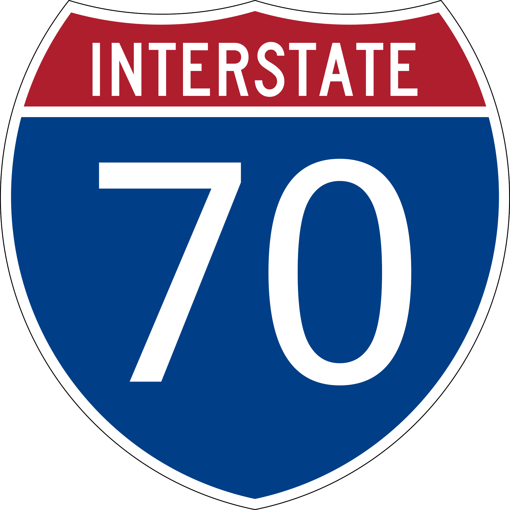

Interstate Routes
For additional Interstate Route Information, click the icons below:
North/South
East/west

ROADSIGNS USA truck routes are primarily interstate highways covering rural areas and major metros throughout the contiguous United States. All additional secondary and State Highway travel associated with the interstate fleet routes are not included in the advertiser “impression” counts. That offers our advertisers additional significant viewership and value.
For additional Interstate Route Information, click the icons below:
Interstate 5 spans the West Coast, originating at San Ysidro (San Diego), California, the nation’s busiest international border crossing, and culminating at Blaine, Washington. This freeway connects all of the major population centers of the western seaboard, including San Diego, Los Angeles, Sacramento, Portland and Seattle. Via I-580 and I-505, Interstate 5 provides freeway connections to the populous San Francisco Bay Area.
Beginning at the International Border at San Ysidro, Interstate 5 connects the metropolitan areas of Tijuana, Baja California, and San Diego, California. This interstate spans the full three west coast states.
California – 796.53 miles Cities – San Diego, Santa Ana, Los Angeles, Stockton, Sacramento, Red Bluff, Anderson, Redding, Yreka
Oregon – 308.14 miles Cities – Ashland, Medford, Grants Pass, Roseburg, Eugene, Salem, Portland
Washington – 276.62 miles Cities – Vancouver, Kelso, Chehalis, Centralia, Olympia, Tacoma, Seattle, Everett, Mt. Vernon, Bellingham
The I-10 Interstate 10 Highway is the main east-west highway automotive transportation corridor along the southern United States and southern Gulf Coast states. The I-10 acts as a major connector for major cities, sea-ports, tourism, military, and energy assets located along it's corridor.
The I-10 is a "trans-continental" highway, meaning it travels across the entire mainland US from coast-to-coast; from the east coast at Jacksonville FL, to the west coast at Los Angeles CA. The I-10 travels through 8 different US states, including; Alabama, Arizona, California, Florida, Louisiana, Mississippi, New Mexico, and Texas.
A number of larger cities are located along the I-10 corridor, including; Los Angeles CA, San Bernardino CA, Phoenix AZ, San Antonio TX, Houston TX, Baton Rouge LA, New Orleans LA, Mobile AL, Pensacola FL, Tallahassee FL, and Jacksonville FL.
The I-10 is also known by a number of different names (some depending upon the region) for example in California, sections of the I-10 are known as the "Santa Monica Freeway" and the "San Bernardino Freeway", in Houston Texas a section of the I-10 is known as "the Katy Freeway"... the Highway is also sometimes called the "Christopher Columbus Transcontinental Highway" and the "Pearl Harbor Memorial Highway".
The I-10 connects with a number Interstate Highways along its route, including; in California the I-10 connects with the I-5 and I-15, in Arizona the I-10 connects with the I-8, I-17, and I-19, in Texas the I-10 connects with the I-20, I-25, I-35, I-37, I-45, in Louisiana the I-10 connects with the I-49, I-55, I-59, I-37, I-45, in Alabama the I-10 connects with the I-65, and in Florida the I-10 connects with the I-75 and I-95.
According to the software program Streets & Trips, the program calculates the entire length of the I-10 at approximately 2,460 miles long, and takes approx. 41 hrs. of full driving time to complete.
California – 242.54 miles Cities – Santa Monica, Los Angeles, Pomona, Ontario, San Bernardino, Beaumont, Banning, Indio, Blythe
Arizona – 392.33 miles Cities – Phoenix, Casa Grande, Tucson
New Mexico – 164.27 miles Cities – Lordsburg, Deming, Las Cruces
Texas – 881.00 miles Cities – El Paso, Fort Stockton, Kerrville, San Antonio, Houston, Beaumont, Orange
Louisiana – 274.42 miles Cities – Lake Charles, Lafayette, Baton Rouge, New Orleans, Slidell
Mississippi – 77.19 miles Cities – Gulfport, Biloxi, Pasacagoula
Alabama – 66.31 miles Cities – Mobile
Florida – 362.28 miles Cities – Pensacola, Tallahassee, Lake City, Jacksonville
Joining the desert southwest with the intermountain west, Interstate 15 provides a major link between the interior of Canada, several transcontinental corridors, Southern California, and Mexico. Travelers westbound on I-40, I-70 and I-80 may easily transition onto southbound I-15 to connect to Las Vegas, Los Angeles, San Diego and International Destinations in Mexico. Between these destinations, I-15 is an extremely busy highway, frequently backing up on holiday weekends in the Mojave Desert.
Originating within Mission Valley in San Diego, Interstate 15 leads north through Murphy Canyon to Miramar Naval Air Station and Kearny Mesa as a busy commuter route to Poway, Rancho Bernardo and Escondido. This stretch includes HOT lanes (Interstate 15 Express Lanes) running between the north and southbound main lines.
Beyond North Las Vegas, I-15 turns more easterly again by Nellis Air Force Base and Las Vegas Motor Speedway to exit the Las Vegas metropolitan area for the trek to Dry Lake Valley, Mormon Mesa and Mesquite near the Arizona state line. A short but scenic stretch through Arizona ensues, with I-15 winding through Virgin River Gorge between the Beaver Dam and Virgin Mountains.
Interstate 15 enters Utah at Big Valley and quickly approaches the growing city of St. George. St. George includes a Business Loop for I-15, which serves the city center to the north and west of the freeway.
California – 287.26 miles Cities – San Diego, Escondido, Corona, Riverside, San Bernardino, Victorville, Barstow
Nevada – 123.77 miles Cities – Las Vegas
Arizona – 29.39 miles Cities – none
Utah – 401.07 miles Cities – St. George, Cedar City, Spanish Fork, Provo, Orem, American Fork, Salt Lake City, Ogden, Brigham City
Idaho – 196.00 miles Cities – Pocatello, Blackfoot, Idaho Falls
Montana – 396.03 miles Cities – Butte, Helena, Great Falls
Interstate 20 (I‑20) is a major east–west Interstate Highway in the Southern United States. I‑20 runs 1,539 miles (2,476 km) through 6 states beginning near Kent, Texas, at I-10 to Florence, South Carolina, at I-95. Between Texas and South Carolina, I‑20 runs through northern Louisiana, central Mississippi, northern Alabama, and northern Georgia.
The major cities that I-20 connects to includes (from west to east) Fort Worth, Texas; Dallas, Texas, Shreveport, Louisiana, Jackson, Mississippi, Birmingham, Alabama, Atlanta, Georgia, Augusta, Georgia, Columbia, South Carolina and Florence, South Carolina.
From its eastern terminus at I‑95, the highway continues about 2 miles (3.2 km) eastward into the city of Florence South Carolina.
Route description:
I-20 enters Georgia near Tallapoosa and after passing through western Georgia, it enters the Atlanta metropolitan area before meeting I-285 (the "Atlanta Bypass"). On clear days, eastbound motorists get their first view of downtown Atlanta as they come over the top of the Six Flags Hill. The Six Flags Over Georgia amusement park is easily visible off exit 46 eastbound. The highway then passes through the center of Atlanta, meeting with I-75 and I-85, which share a common expressway (the "Downtown Connector"). It continues through Metropolitan Atlanta eastward and through the eastern half of Georgia until it exits the state, crossing the Savannah River at Augusta after meeting its spur route I-520.
Texas – 636.08 miles Cities – Pecos, Monohans, Odessa, Midland, Big Spring, Colorado City, Sweetwater, Abilene, Fort Worth, Dallas, Longview, Marshall
Louisiana – 189.87 miles Cities – Shreveport, Bossier City, Minden, Ruston, Monroe, Tallulah
Mississippi – 154.61 miles Cities – Vicksburg, Jackson, Meridian
Alabama – 214.70 miles Cities – Tuscaloosa, Bessemer, Birmingham, Anniston
Georgia – 202.61 miles Cities – Atlanta, Covington, Thomson, Augusta
South Carolina – 141.51 miles Cities – North Augusta, Columbia, Camden, Florence
Interstate 25 is a major Interstate Highway in the western United States. It is primarily a north–south highway, serving as the main route through New Mexico, Colorado, and Wyoming. I-25 stretches from Interstate 10 at Las Cruces, New Mexico, to Interstate 90 in Buffalo, Wyoming.
New Mexico – 462.12 miles Cities – Las Cruces, Socorro, Belen, Albuquerque, Santa Fe,Las Vegas, Raton
Colorado – 298.60 miles Cities – Trinidad, Pueblo, Colorado Springs, Denver, Longmont,Loveland, Fort Collins
Wyoming – 300.95 miles Cities – Cheyenne, Douglas, Casper, Buffalo
Interstate 35 serves the heartland of America, connecting South Texas with the Arrowhead of Minnesota. Starting in Laredo, IH 35 ventures north through an arid region to San Antonio, where it briefly overlaps with Interstate 10 by Downtown. The freeway angles northeast from there along a busy corridor to the capital city of Austin, Waco and Hillsboro where it partitions into east and west branches. Interstate 35W serves Fort Worth while Interstate 35E retains the exit numbering scheme of IH 35 through Dallas. The two reconvene at Denton, where IH 35 resumes a northward heading to Gainesville and a crossing of the Red River into Oklahoma.
Leaving the Lone Star State behind, Interstate 35 travels north to Ardmore and the scenic Arbuckle Mountains ahead of Pauls Valley. The freeway continues to Norman, home of the University of Oklahoma, and Moore, a south suburb of Oklahoma City. Once in OKC, I-35 overlaps with I-40 to the southeast of Downtown and with I-44 from Lake Aluma to Lake Arcadia.
Texas – 504.15 miles Cities – Laredo, Pearsall, San Antonio, Austin, Georgetown, Temple, Waco, Hillsboro, Waxahachie, Dallas, Denton, Gainesville
Oklahoma – 235.96 miles Cities – Ardmore, Pauls Valley, Norman, Oklahoma City, Guthrie, Perry
Kansas – 235.51 miles Cities – Wichita, Emporia, Ottawa, Olathe, Kansas City
Missouri – 114.74 miles Cities – Kansas City, Cameron
Iowa – 218.33 miles Cities – Des Moines, Ames
Minnesota – 259.69 miles Cities – Albert Lea, Owatonna, Faribault, St. Paul, Duluth
Spanning eight states Interstate 40 is a major cross-country freeway connecting the Desert Southwest with the Southeastern United States. Starting in Barstow, California, the freeway generally follows the alignment of Historic U.S. 66 across the Mojave Desert into the high desert. Spanning the Colorado River west of Kingman, I-40 gains elevation on a course south of the Grand Canyon to the city of Flagstaff. Advancing east across New Mexico, the freeway spans the width of the state, converging with Interstate 25 in Albuquerque.
Continuing to Amarillo, Interstate 40 transitions into the Great Plains in eastern New Mexico, leading into the Texas Panhandle. The freeway splits from Historic U.S. 66 at Oklahoma City, remaining generally eastward while U.S. 66 diverges northeast toward Tulsa, St. Louis and Chicago. Entering Arkansas, Interstate 40 trends southeast from Fort Smith along the Oklahoma state line to Little Rock. The freeway follows U.S. 70 east from the capital city to West Memphis. A short concurrency with I-55 precedes the Hernando DeSoto Bridge taking I-40 across the Mississippi River.
Through Memphis, I-40 follows the northern arc of the inner beltway; the southern half is I-240. The original planned alignment took I-40 across the city, using Sam Cooper Boulevard, a partially completed freeway/boulevard spur from the east toward Overton Park. Leaving Memphis, I-40 heads to Jackson and then Nashville, where it briefly overlaps with both I-65 and I-24. I-40 joins Nashville with Knoxville, merging with I-75 along an eight to ten lane freeway leading into the metropolitan area from Farragut.
Turning along a southeasterly course, Interstate 40 traverses the Great Smoky Mountains into North Carolina. Spanning nearly the width of the Tar Heel State, I-40 connects regional cities in western parts of the state including Asheville, Hickory and Statesville with the Triad area (WinstonSalem and Greensboro). Combining with I-85, I-40 proceeds east to Durham, where it turns southward for the remainder of its 420 mile route in North Carolina to Raleigh and Wilmington.
California – 154.61 miles Cities – Barstow, Needles
Arizona – 359.48 miles Cities – Kingman, Flagstaff, Winslow, Holbrook
New Mexico – 373.51 miles Cities – Gallup, Grants, Albuquerque, Tucumcari
Texas – 177.10 miles Cities – Amarillo
Oklahoma – 331.73 miles Cities – Elk City, Clinton, Weatherford, El Reno, Oklahoma City, Henryetta
Arkansas – 284.69 miles Cities – Fort Smith, Russellville, Morrilton, Conway, Little Rock, Forrest City, West Memphis
Tennessee – 455.28 miles Cities – Memphis, Jackson, Nashville, Lebanon, Cookeville, Crossville, Knoxville, Newport
North Carolina – 420.21 miles Cities – Asheville, Morganton, Hickory, Statesville, WinstonSalem, Greensboro, Burlington, Durham, Raleigh, Smithfield, Wilmington
Interstate 55 parallels the Mississippi River for much of its length. The route originates at Interstate 10 outside the city of La Place, located west of New Orleans in the Delta region. The freeway runs northward along an isthmus between Lakes Maurepas and Pontchartrain between LaPlace and Ponchatola. This section of Interstate 55 is elevated. Meeting I-12 at Hammond, I-55 transitions into a forested freeway to McComb and Brookhaven in southern Mississippi.
Interstate 74 combines with I-55 to the west of Bloomington while I-39 ends from the north at Normal. Interstate 55 continues northeast from there to Joliet (I-80) and the Stephenson Expressway leading into Chicago. The northern terminus of I-55 is in Downtown Chicago at Lake Shore Drive (U.S. 41) near the sprawling McCormick Place, the city’s convention center.
Louisiana – 65.81 miles Cities – Hammond
Mississippi – 290.41 miles Cities – McComb, Brookhaven, Jackson, Canton, Winona, Southaven
Tennessee – 12.28 miles Cities – Memphis
Arkansas – 72.22 miles Cities – West Memphis, Blytheville
Missouri – 210.45 miles Cities – Sikeston, Cape Girardeau, Perryville, St. Louis
Illinois – 313.08 miles Cities – East Saint Louis, Edwardsville, Litchfield, Springfield, Lincoln, Bloomington, Pontiac, Joliet, Chicago
Interstate 65 (I-65) is a major north–south Interstate Highway in the central United States. It also serves as one of the main north/south routes through Nashville, Tennessee; Louisville, Kentucky and Indianapolis, Indiana; each a major metropolitan area in its respective state.
Alabama – 367.00 miles Cities – Mobile, Greenville, Montgomery, Clanton, Birmingham, Cullman, Decatur, Athens
Tennessee – 121.71 miles Cities – Franklin, Nashville
Kentucky – 137.32 miles Cities – Bowling Green, Elizabethtown, Louisville
Indiana – 261.27 miles New Albany, Seymour, Columbus, Franklin, Indianapolis, Lebanon, Lafayette, Gary
Interstate 70 traverses nearly the width of the U.S., passing through 10 states and serving major metropolitan areas such as Denver, Kansas City, St. Louis, Indianapolis, Columbus and Baltimore. The west end of the freeway connects with Interstate 15 at Cove Fort, Utah.
Leaving the Denver metropolitan area, Interstate 70 traverses the Great Plains from Eastern Colorado into Kansas. The route through the Midwest crosses the width of Missouri, Illinois and Indiana.
Through Ohio, Interstate 70 crosses Dayton and Columbus, then briefly enters West Virginia at Wheeling. Entering Pennsylvania, Interstate 70 merges with the Pennsylvania Turnpike (I-76) and separates at Breezewood. I-70 traffic must follow U.S. 30 through the business district in Breezewood to connect with the freeway leading south to Maryland from the PA Turnpike. There are no plans to create a direct connection between Interstates 70 and 76.
Within the St. Louis metropolitan area, Interstate 70 was realigned to cross the Mississippi River via the four lane Stan Musial Veterans Memorial Bridge. Located north of both the existing Martin Luther King Bridge and the Poplar Street Bridge (which is now designated as just I- 55/64 and U.S. 40), the new cable-stayed bridge stems east from an extended Interstate 44 at a new interchange with Tucker Boulevard to arc southward to East St. Louis, Illinois at the tri-level interchange where I-55 and I-64 part ways.
The freeway for Interstate 70 ends at a Park and Ride in Baltimore.
Utah – 232.15 miles Cities – Cove Fort, Richfield, Green River
Colorado – 450.18 miles Cities – Grand Junction, Denver, Limon
Kansas – 424.15 miles Cities – Goodland, Hays, Russell, Salina, Abilene, Junction City, Topeka, Lawrence, Kansas City
Missouri – 250.16 miles Cities – Kansas City, Boonville, Columbia, St. Louis
Illinois – 157.33 miles Cities – East St. Louis, Vandalia, Effingham
Indiana – 156.60 miles Cities – Terre Haute, Indianapolis, Richmond
Ohio – 225.60 miles Cities – Dayton, Springfield, Columbus, Zanesville, Cambridge
West Virginia – 14.45 miles Cities – Wheeling
Pennsylvania – 167.92 miles Cities – Washington, Nonessen-Charleroi, Breezewood
Maryland – 93.62 miles Cities – Hancock, Hagerstown, Frederick, Baltimore
Interstate 75 is a major transportation corridor, linking the Southeastern U.S. and the Great Lakes. The highway runs the length of the Florida peninsula from the Miami area and up the Gulf Coast through Naples, Fort Myers, Sarasota, Tampa, and Gainesville. Farther north, in Georgia, I-75 continues on through Macon and Atlanta before running through Chattanooga and Knoxville and the Cumberland Mountains in Tennessee. Interstate 75 runs from Cincinnati to Toledo by way of Dayton in the U.S. state of Ohio. The highway enters the state running concurrently with I-71 from Kentucky on the Brent Spence Bridge over the Ohio River and into the Bluegrass region.
Florida – 470.88 miles Cities – Miami, Naples, Fort Myers, Port Charlotte, Venice, Sarasota, Bradenton, Tampa, Ocala, Gainesville, Lake City
Georgia – 355.11 miles Cities – Valdosta, Tifton, Cordele, Macon, Atlanta, Marietta, Cartersville, Dalton
Tennessee – 161.86 miles Cities – Chattanooga, Cleveland, Athens, Lenoir City, Knoxville
Kentucky – 191.78 miles Cities – Corbin, Richmond, Lexington, Covington
Ohio – 211.30 miles Cities – Cincinnati, Middletown, Dayton, Piqua, Sidney, Lima, Findlay, Bowling Green, Toledo
Michigan – 395.54 miles Cities – Monroe, Detroit, Pontiac, Flint, Saginaw, Bay City, Mackinaw City, Sault Ste. Marie
Interstate 80 is a major transcontinental corridor connecting California and New York City and passes through 11 states. From the city of San Francisco to a few miles west of the Hudson River in northern New Jersey, I-80 traverses various terrain and generally very high traffic. Its highest point is located at Sherman Hill Summit in Wyoming between Laramie and Cheyenne at an elevation of 8640 feet. The highest point of Interstate 80 east of the Mississippi is near Milepost 111 in Pennsylvania.
Although Interstate 80 begins at U.S. 101 in San Francisco, original plans called for the route to continue west through Golden Gate Park to the Pacific Ocean near the famous Ocean Beach area. This plan was halted due to community opposition.
In the east, I-80 ends at Interstate 95 along the Teaneck Township and Ridgefield Park line in New Jersey.
California – 199.24 miles Cities – – San Francisco, Oakland, El Cerrito, Pinole, Vallejo, Fairfield, Vacaville, Davis, Sacramento, Auburn, Truckee
Nevada – 410.67 miles Cities – Verdi, Reno, Sparks, Fernley, Lovelock, Winnemucca, Battle Mountain, Carlin, Elko, Wendover
Utah – 196.34 miles Cities – Salt Lake City, Park City, Echo
Wyoming – 402.76 miles Cities – Evanston, Lyman, Green River, Rock Springs, Rawlins, Laramie, Cheyenne, Pine Bluffs
Nebraska – 455.32 miles Cities – Kimball, Sidney, Ogallala, North Platte, Lexington, Kearney, Grand Island, Seward, York, Lincoln, Omaha
Iowa – 303.23 miles Cities – Council Bluffs, Des Moines, Newton, Iowa City, Davenport
Illinois – 163.52 miles Cities – Moline, Genesco, Princeton, La Salle, Ottawa, Morris, Joliet, Chicago
Indiana – 151.56 miles Cities – Hammond, Gary, South Bend, Elkhart
Ohio – 237.48 miles Cities – Toledo, Elyria, Cleveland, Youngstown
Pennsylvania – 311.12 miles Sharon, Mercer, Clarion, Dubois, Milton, Bloomsburg, Stroudsburg
New Jersey – 68.35 miles Cities – Paterson, Hackensack, Teaneck
Interstate 85 (I-85) is a major Interstate Highway in the Southeastern United States. Its current southern terminus is at an interchange with I-65 in Montgomery, Alabama; its northern terminus interchanges with I-95 in Petersburg, Virginia, near Richmond. Interstate 85 traverses a good portion of the Appalachian piedmont, as it provides a major travel corridor between the Deep South and Mid Atlantic Regions. The increasingly busy trucking corridor connects the major metropolitan areas of Atlanta and Charlotte. In addition, Interstate 85 links several smaller growing metropolitan areas including Greenville-Spartanburg, the Triad (Greensboro), and the Triangle (Durham).
Alabama – 80.00 miles Cities – Montgomery, Auburn, Opelika, Lanett
Georgia – 179.90 miles Cities – LaGrange, Newnan, Atlanta
South Carolina – 106.28 miles Cities – Anderson, Greenville, Spartanburg, Gaffney
North Carolina – 231.23 miles Cities – Gastonia, Charlotte, Kannapolis, Salisbury, Lexington, High Point, Greensboro, Burlington, Durham, Henderson
Virginia – 68.84 miles Cities – Petersburg
The longest route within the Interstate Highway System, I-90 serves major northern cities such as Seattle, Chicago, Cleveland, Buffalo and Boston, regional cities and travels through 13 states along its transcontinental route from the Pacific Northwest to the Rocky Mountains and Great Plains including Spokane, Billings, Sheridan, Rapid City and Sioux Falls. The freeway traverses several mountain passes along the northern tier.
Washington – 296.92 miles Cities – Seattle, Bellevue, Ellensburg, Moses Lake, Spokane
Idaho – 73.55 miles Cities – Coeur d’Alene, Kellogg, Wallace
Montana – 551.68 miles Cities – Missoula, Deer Lodge, Butte, Bozeman, Livingston, Laurel, Billings, Hardin
Wyoming – 208.80 miles Cities – Sheridan, Buffalo, Gillette
South Dakota – 412.76 miles Cities – Spearfish, Sturgis, Rapid City, Chamberlain, Mitchell, Sioux Falls
Minnesota – 275.70 miles Cities – Worthington, Fairmont, Albert Lea, Austin, Rochester
Wisconsin – 108.61 miles Cities – La Crosse, Onalaska, Tomah, Madison, Beloit
Illinois – 123.89 miles Cities – Rockford, Elgin, Chicago
Indiana – 156.28 miles Cities – Hammond, Gary, South Bend, Elkhart
Ohio – 244.75 miles Cities – Toledo, Elyria, Cleveland, Ashtabula, Conneaut
Pennsylvania – 46.30 miles Cities – Erie
New York – 385.48 miles Cities – Dunkirk, Buffalo, Batavia, Rochester, Syracuse, Oneida, Utica, Amsterdam, Schenectady, Albany
Massachusetts – 135.72 miles Cities – Springfield, Holyoke, Worcester, Framingham, Boston
Interstate 95 (I-95) is the main Interstate Highway on the East Coast of the United States, running from U.S. Route 1 (US 1) in Miami, Florida to the Houlton–Woodstock Border Crossing with New Brunswick, Canada. The highway runs largely parallel to the Atlantic Ocean coast and US 1, serving areas from Florida to Maine. The East Coast’s Main Street, Interstate 95 serves the entire Northeast Megalopolis, while also serving southeastern cities of Jacksonville and Miami along Florida’s east coast. The highway is an important factor in commerce and tourism, linking scenic New England with the subtropical environs of southern Florida. It passes through more states than any other Interstate highway.
Florida – 382.15 miles Cities – Miami, Hollywood, Fort Lauderdale, Boca Raton, West Palm Beach, Fort Pierce, Melbourne, Titusville, Daytona Beach, Jacksonville
Georgia – 112.00 miles Cities – Brunswick, Savannah
South Carolina – 198.76 miles Cities – Walterboro, Florence, Dillon
North Carolina – 181.36 miles Cities – Lumberton, Smithfield, Fayetteville, Roanoke Rapids
Virginia – 178.73 miles Cities – Emporia, Petersburg, Richmond, Fredericksburg, Alexandria, Arlington
District of Columbia – 0.11 miles Cities – Washington
Maryland – 110.01 miles Cities – Suitland, New Carollton, Greenbelt, Laurel, Baltimore, Aberdeen, Havre de Grace
Delaware – 23.43 miles Cities – Newark, Wilmington
Pennsylvania – 51.00 miles Cities – Chester, Philadelphia
New Jersey – 97.76 miles Cities – New Brunswick, Elizabeth, Newark, North Bergen
New York – 23.50 miles Cities – New York City, New Rochelle
Connecticut – 111.57 miles Cities – Greenwich, Stamford, Norwalk, Bridgeport, New Haven, New London
Rhode Island – 42.36 miles Cities – Warwick, Cranston, Providence, Pawtucket
Massachusetts – 91.95 miles Cities – Attleboro, Boston, Needham, Lexington, Woburn, Danvers
New Hampshire – 16.11 miles Cities – Portsmouth
Maine – 303.10 miles Cities – Kittery, Portland, Brunswick, Augusta, Waterville, Bangor, Houlton